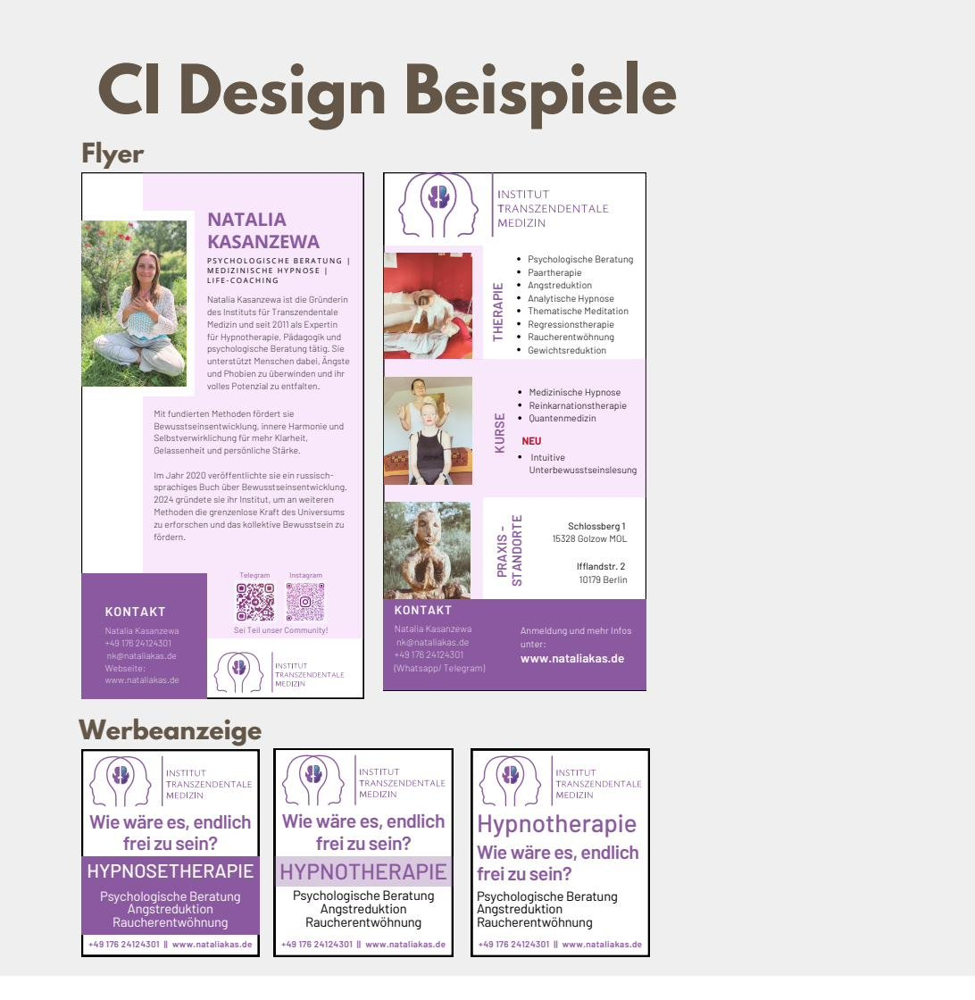
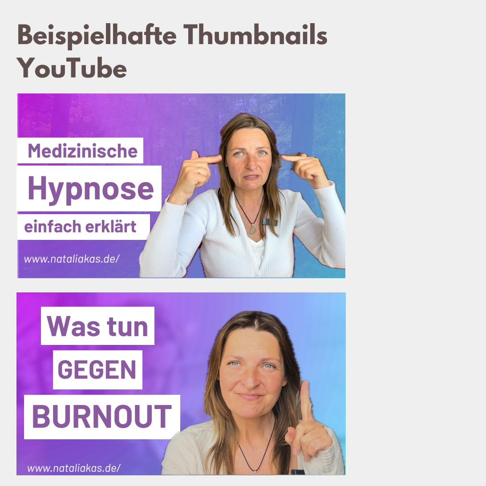
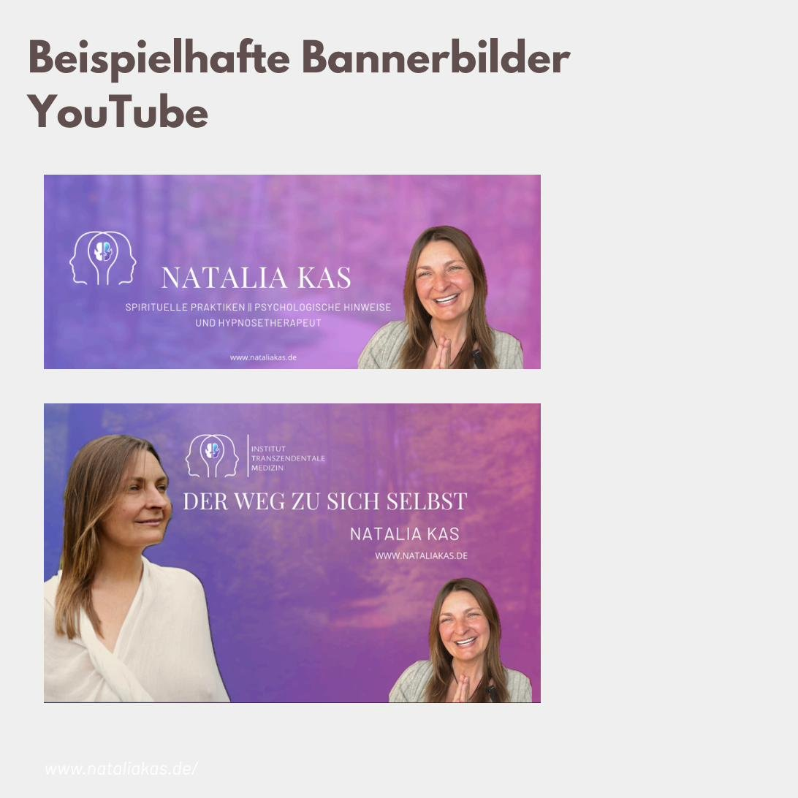

Das Institut für Transzendentale Medizin verbindet psychologische Beratung, medizinische Hypnose und ganzheitliche Methoden — mit einer erfahrenen Gründerin, die seit 2011 im Bereich Hypnotherapie, Pädagogik und psychologischer Beratung tätig ist. Nach außen fehlte jedoch eine klare, wiedererkennbare Markenidentität: uneinheitliche Farben und Schriftarten, mehrere parallele Webseiten, ein nicht eindeutiger Markenname und fehlendes Online-Marketing erschwerten es, Vertrauen auf den ersten Blick aufzubauen.
Meine Aufgabe war es, aus diesem Fremdbild eine klare Positionierung, ein durchdachtes Farb- und Designsystem sowie erste Anwendungsbeispiele zu entwickeln — als Grundlage für alle zukünftigen Marketingmaterialien.
Den Ausgangspunkt bildete eine strukturierte Analysephase: Stärken und Schwächen der bestehenden Außenwirkung, ein Vergleich mit vier Wettbewerber-Websites sowie eine detaillierte Zielgruppenanalyse nach Limbic-Types, um Motive und Bedürfnisse der unterschiedlichen Kundengruppen sichtbar zu machen.
Auf Basis der Analyse habe ich die Marke bewusst von einer traditionellen, kleinteiligen Wirkung hin zu einem zeitgemäßen, klaren und dennoch warmen Auftritt positioniert — organisch in der Formsprache, aber strukturiert in der Umsetzung.
„Was zählt, ist die innere Heilung, die dieser Zustand mit sich bringt — und die sich in der körperlichen Welt widerspiegelt.“
Die Markenmission wurde entsprechend zugespitzt: Zugang zu innerer Heilung und höherem Bewusstsein zu schaffen — durch Wissensvermittlung, die verständlich, professionell und vertrauenswürdig wirkt.
Violett- und Blautöne stehen für Bewusstsein, Transformation und Vertrauen; ein warmes Türkis setzt einen belebenden Akzent. Zusammen mit einem sanften Off-White bildet die Palette die Basis für alle weiteren Materialien.
Auf Grundlage von Farbsystem, Logo und Typografie habe ich erste Anwendungsbeispiele entwickelt — Flyer, Werbeanzeigen sowie Vorlagen für Social-Media-Thumbnails und Banner.


